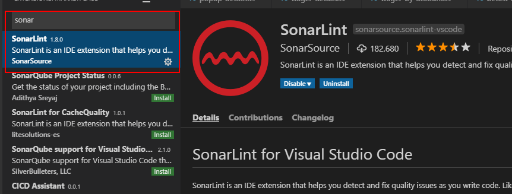
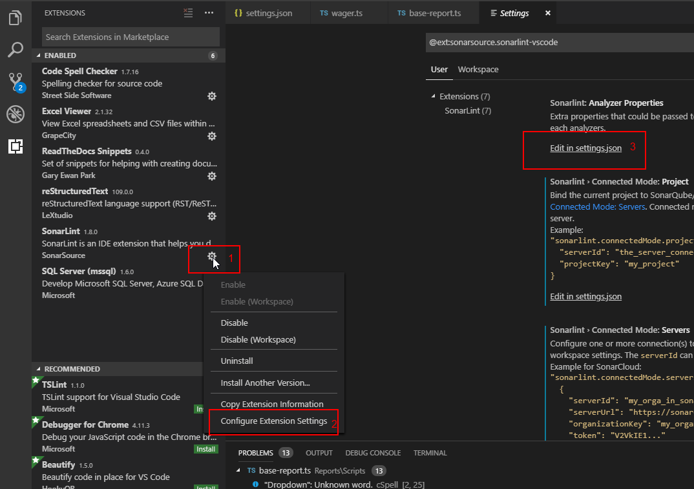
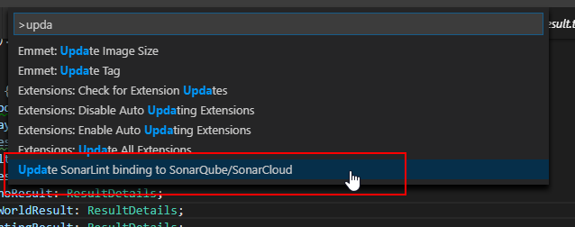
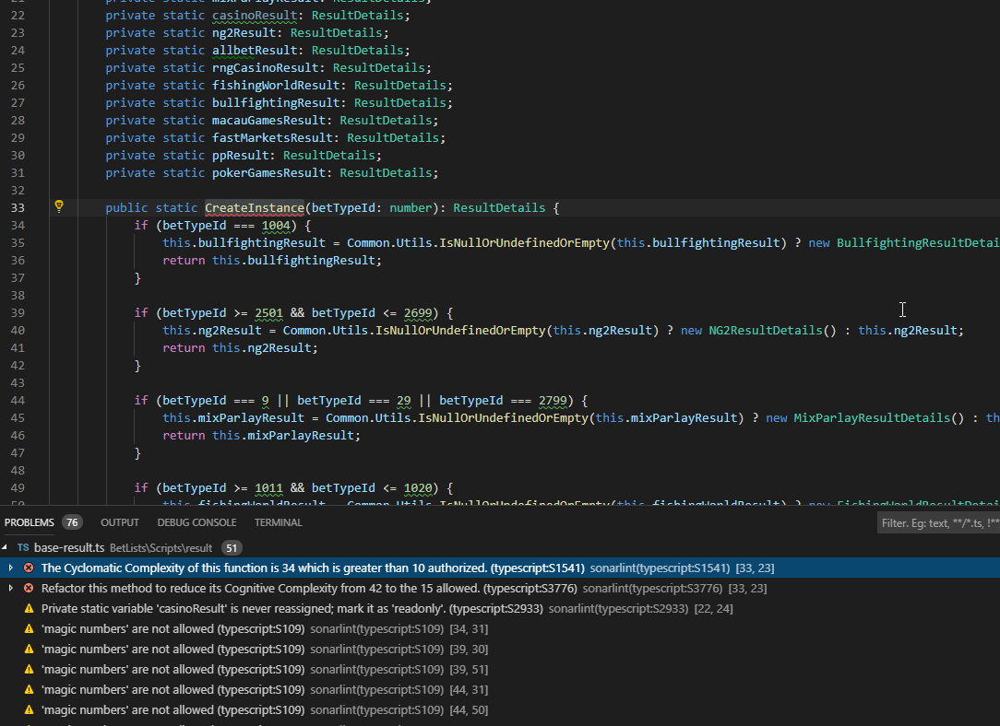
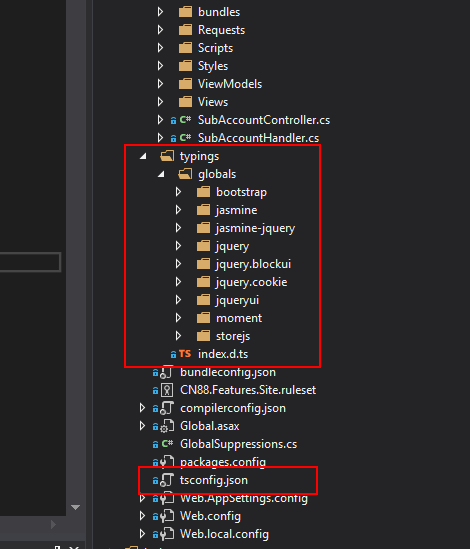
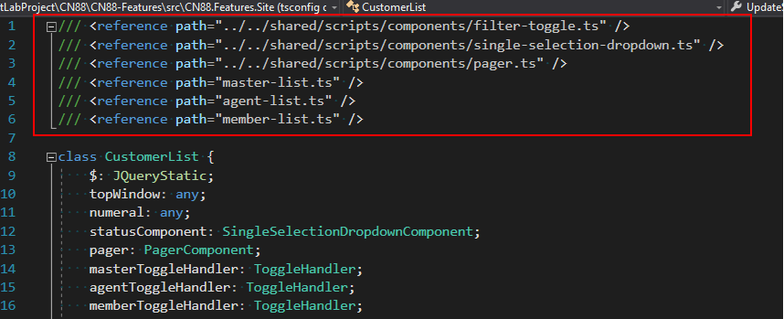

Typescript Guidelines¶
Please follow these steps to config and check sonarqube for typescipt file
Step 1. Link project to sonarqube server using Visual Studio Code
Install Visual Studio Code and SonarLint extension first, then open project website folder, follow this image to config:


After clicked on Edit in settings.json, config your project like this:
{
"terminal.integrated.shell.windows": "C:\\WINDOWS\\System32\\cmd.exe",
"sonarlint.ls.javaHome": "C:\\Program Files\\Java\\jdk1.8.0_11",
"sonarlint.connectedMode.servers": [
{
"serverId": "localsonarqube",
"serverUrl": "http://sonarqube.nexdev.net",
"token": "d1f2bdcb11993b2f61fbb2e7e96c5461b95158ea"
}],
"sonarlint.connectedMode.project": {
"serverId":"localsonarqube",
"projectKey": "CN88-Features"
}
}
Go to http://sonarqube.nexdev.net/account/security/ to get your login token
Step 2. Update latest rules (for first time), check your ts file errors and enjoy fixing
Press Ctrl + Shift + P to open command pallet, then run “Update SonarLint binding to SonarQube/SonarCloud” to bind with server

Enjoy fixing

If you caught not reference type in visual studio code, please add typings, tsconfig.json, relative reference file path to your project/ts file

